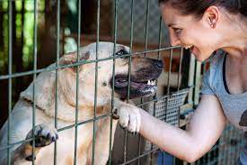

Nyitvatartás: Hétfő - Szombat, 8:00 - 20:00
Tel.: +36-99-999-9999
6726 Szeged, X körút 7
| Ez a menhely egy olyan szervezet, amely a kutyák jóllétének védelmét és javítását tűzte ki célul. Az állatmentők és önkéntesek segítségével folyamatosan dolgozunk azon, hogy biztonságos, meleg és szeretetteljes otthont biztosítsunk az általunk fogadott állatoknak. A menhelyen olyan kutyák megtalálhatóak, akikről a legtöbben már nem tudnak gondoskodni, vagy az utcáról kerültek ide, sérülten vagy rossz bánásmódban részesülve. Mi az elsődleges orvosi ellátástól kezdve az élelem és a gondozás teljes spektrumát biztosítjuk számukra, hogy megtalálhassák az örökbeadó gazdit, aki szeretetteljes otthont biztosít számukra. Az önkéntesek és állatmentők, akik a nálunk dolgoznak, nagyon elkötelezettek az állatok jóllétének javítása érdekében. Az általuk végzett munka rendkívül fontos, hiszen az állatok egészsége és boldogsága nélkül az életük nagyon nehéz lenne. A menhely célja, hogy segítsen a kutyákon, és lehetőséget adjon nekik arra, hogy újra boldog és egészséges életet éljenek. |  |